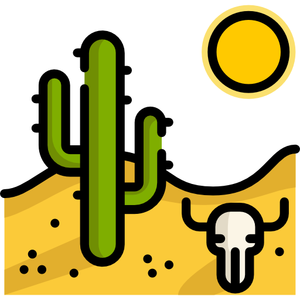

Nos Formations
Survolez les images pour en apprendre davantage !
Apprentissage orienté milieu tropical

Comme l'indique le nom, cette formation sera dirigée vers le milieu tropical comme la jungle amazonienne, en complétant cette formation, vous devriez être capable de survivre pendant 1 semaine au milieu de la jungle. Dans cette formation, les matières mises à l'avant seront la cueillette (la flore), la création de feu et le langage animal. Le coût de cette formation est de 1500€ par an et la formation dure 3 ans.
Apprentissage orienté milieu aride
Dans l'apprentissage en milieu aride, 2 matières priment, la recherche d'eau ainsi que la chasse, vous devez absolument maîtriser ces matières afin de pouvoir survivre dans ce milieu. Le prix de cette formation est de 2300€ par année et comme pour la formation précédente, elle dure 3 ans.
Apprentissage orienté milieu polaire
Pour finir concernant l'apprentissage en milieu polaire, le plus difficile d'entre tous, vous devrez tout d'abord savoir comment vous réchauffer le plus rapidement possible, construire un abri et savoir pêcher. Cette formation coûte 3100€ par an, à l'instar des formations précédentes elle dure 3 ans.